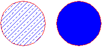
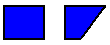

Applying colors and patterns to closed boundaries
A boundary in a Solid Edge drawing, sketch, or profile can be filled with a pattern or solid color.

A fill is like other elements in that you can format it and move it around, but the fill is always associated with a boundary. The boundary can be made up of more than one element.
Modifying fills
A fill can exist only inside a closed boundary. A fill is associative, which means it maintains its original orientation to an element regardless of the way you manipulate the element. For example, if you move the boundary, the fill moves with it. If you change the boundary, the fill changes to conform to the new boundary area. You can delete a fill the same way you would delete an element.

Fill insertion point
-
When you click inside an object to fill it, the cursor location designates the fill insertion point.

-
The fill insertion point is also the fill handle. You can select the fill handle and drag the fill to another object.

-
If you use the Redo Fill option to refill the area based on a new boundary, the insertion point designates which side of the object will be refilled.

Formatting fills
Formatting a fill is similar to applying formats to an element. You can apply unique formats to fills with the Properties command or by setting options on the Fill command bar. To make several fills look the same, you can apply a fill style by selecting the style on the command bar.
The software provides fill styles for various engineering standards, such as ANSI, ISO, and AIA. You can modify an existing fill style or create a new one with the Style command.
How do I
Place a fillFormat a fill
Refill a modified boundary
Look up more details
Fill commandFill command bar
Fill Properties dialog box